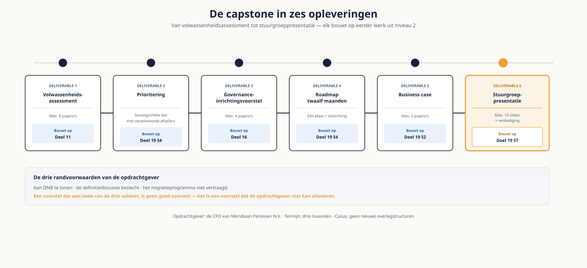

Deel 21 — Capstone — de volledige opdracht
Niveau 2 — Praktijk · Reader
Voorbereiding, geen vervanging
Deze cursusmap is onafhankelijk ontwikkeld door Ductus B.V. Ductus is niet gelieerd aan, geaccrediteerd door of goedgekeurd door DAMA International, IIBA, IAPP, de EDM Association of Microsoft.
Dit materiaal bereidt voor op de genoemde examens en vervangt het officiële examenmateriaal niet. Bodies of knowledge, handboeken en examenblueprints worden hier niet gereproduceerd; deelnemers schaffen die bronnen zelf aan.
Alle genoemde merken zijn eigendom van hun respectieve houders. Examengegevens gecontroleerd in augustus 2026 — verifieer vóór inschrijving bij de bron.
1. Wat de capstone is
Tien delen lang heb je onderdelen van een opdracht geoefend: een assessment, een model, een begrippenkader, matchingregels, een meetplan, een DPIA, een analyse, een advies. Hier voer je één keer de hele opdracht uit, van intake tot stuurgroep. Dat is iets anders dan de som van de onderdelen, en dat verschil is precies wat je aantoont.
De capstone van niveau 1 was een nulmeting op een dataset. Deze is een consultancyopdracht: je hebt een opdrachtgever met een termijn, tegenstrijdige belangen in de organisatie, beperkte capaciteit, en een besluit dat genomen moet worden. Het inhoudelijke werk is het makkelijkste deel.
Wat je aantoont
- Dat je een assessment kunt uitvoeren dat op bewijs rust en dat een opdrachtgever accepteert.
- Dat je uit een assessment een verdedigbare prioritering kunt afleiden, inclusief wat er níét gebeurt.
- Dat je een governance-inrichting kunt ontwerpen die past bij de organisatie in plaats van bij het raamwerk.
- Dat je een roadmap kunt maken die rekening houdt met afhankelijkheden en capaciteit.
- Dat je een business case kunt bouwen op de grootheid die het besluit bepaalt.
- Dat je dit alles kunt terugbrengen tot tien slides en een gevraagd besluit — en dat kunt verdedigen.
2. De opdracht
De CFO van Meridiaan Pensioen N.V. heeft je gevraagd om een inrichtingsvoorstel dat aan DNB te tonen is, dat de definitiediscussie beslecht, en dat het migratieprogramma niet vertraagt. De termijn voor het herstelplan is nog drie maanden. Hij heeft laten weten geen nieuwe overlegstructuren te willen.
Je hebt toegang tot alles wat je in niveau 2 hebt verzameld: de assessmentbevindingen uit deel 11, de begrippenlijst uit deel 13, de dataset met de bevindingen uit deel 14 en 15, en het verwerkingsregister uit deel 17. Aanvullende informatie krijg je op verzoek van de docent, die de rol van opdrachtgever speelt.
| Deliverable | Omvang | Bouwt op |
|---|---|---|
| 1. Volwassenheidsassessment | Rapportage van maximaal acht pagina’s | Deel 11 |
| 2. Prioritering | Gerangschikte lijst met verantwoorde afvallers | Deel 19, hoofdstuk 4 |
| 3. Governance-inrichtingsvoorstel | Maximaal vier pagina’s | Deel 16 |
| 4. Roadmap twaalf maanden | Eén plaat plus toelichting | Deel 19, hoofdstuk 4 |
| 5. Business case | Maximaal twee pagina’s | Deel 19, hoofdstuk 2 |
| 6. Stuurgroeppresentatie | Maximaal tien slides plus verdediging | Deel 19, hoofdstuk 7 |
De drie randvoorwaarden van de opdrachtgever
Aan DNB te tonen · de definitiediscussie beslecht · het migratieprogramma niet vertraagd. Alle drie zijn beoordeelde randvoorwaarden. Een voorstel dat aan twee van de drie voldoet, is geen goed voorstel — het is een voorstel dat de opdrachtgever niet kan uitvoeren.

3. Deliverable 1 — het assessment
- Kies en snoei een raamwerk, en verantwoord beide keuzes.
- Meet minimaal zes kennisgebieden, met de scoringsdefinities letterlijk opgenomen.
- Onderbouw elke score met het zwaarste bewijsstuk, en vermeld het bewijsniveau.
- Rapporteer de spreiding waar die groot was; dat is zelf een bevinding.
- Vermeld expliciet wat je niet hebt gemeten en waarom.
- Beperk je tot maximaal vijf bevindingen met impact.
Gebruik de bevindingen die je in niveau 2 daadwerkelijk hebt verzameld. Een assessment dat scores toekent zonder aanwijsbaar bewijs uit de casus, valt bij de verdediging om.
4. Deliverable 2 — de prioritering
- Breng eerst de afhankelijkheden in kaart. Eigenaarschap komt vóór definitie, definitie vóór norm, norm vóór meting.
- Prioriteer met gedwongen rangorde, zonder gelijke plaatsen.
- Bepaal wat er binnen de capaciteit past en wat niet.
- Verantwoord per afvaller waarom hij afvalt, in één zin die je aan de betrokken directeur zou zeggen.
- Benoem welk conflict je hiermee naar voren haalt.
De belangrijkste toets
Als er niets afvalt, heb je niet geprioriteerd. En als de afvallers niet zijn verantwoord met een zin die je hardop zou durven zeggen, komt het conflict alsnog terug — dan in maand vier, als het herstelplan al bij DNB ligt.
5. Deliverable 3 — de governance-inrichting
- Ontwerp de zes bouwstenen: mandaat, organen, rollen, besluitrechten, processen en normen, meting.
- Houd rekening met de eis "geen nieuwe overlegstructuren". Netto nul toegevoegde overleggen is haalbaar en het is een beoordeeld punt.
- Neem de besluitrechtenmatrix op voor minimaal vijf besluittypen, met termijnen en escalatie.
- Modelleer het begripswijzigingsproces in BPMN, en toon aan dat de doorlooptijd binnen de DNB-termijn past.
- Beleg de definitie van "actieve deelnemer": wie beslist, wanneer, en welke variant vervalt.
- Benoem de KPI-set waarmee de inrichting wordt gemeten, met maximaal zes indicatoren.
De definitiediscussie is de kern van de opdracht. Een inrichtingsvoorstel dat de vier varianten laat bestaan, beslecht niets — hoe elegant het organogram ook is.
6. Deliverable 4 — de roadmap
- Twaalf maanden, met kwartaalindeling en zichtbare afhankelijkheden.
- Eén zichtbare winst binnen negentig dagen die de DNB-bevinding raakt.
- Capaciteit per periode, in fte of in uren. Een roadmap zonder capaciteit is een wensenlijst.
- De raakvlakken met het migratieprogramma expliciet, met de maatregel die vertraging voorkomt.
- De momenten waarop een besluit nodig is, met wie het neemt.
- Wat er ná twaalf maanden volgt, op hoofdlijnen.
7. Deliverable 5 — de business case
- Bepaal welke grootheid bij deze CFO het besluit bepaalt, en verantwoord dat.
- Reken de huidige kosten door naar een jaarbedrag, met alle aannames apart zichtbaar.
- Werk het risicoargument uit, inclusief de openstaande DNB-bevinding.
- Zet de kosten van het voorstel ernaast, inclusief het beheer na oplevering.
- Wees eerlijk over de terugverdientijd.
- Benoem wat er niet in geld is uit te drukken.
8. Deliverable 6 — de stuurgroeppresentatie
Maximaal tien slides, vijftien minuten, gevolgd door vijftien minuten vragen van een panel dat de rollen speelt van de CFO, de directeur Beleggingen en de controller uit deel 19.
Opbouw
- Situatie: waar staat Meridiaan, in feiten waar niemand het over oneens is.
- Complicatie: wat blijkt er niet te kloppen, en wat is de termijn.
- Vraag: wat moet er nu besloten worden.
- Voorstel: de inrichting op hoofdlijnen, met de definitiebeslissing expliciet.
- Roadmap en capaciteit.
- Business case, kort.
- Wat er níét gebeurt, en waarom.
- Gevraagd besluit: wat, van wie, vóór wanneer, en wat er gebeurt bij nee.
Vragen waarop je je voorbereidt
- "Waarom moet ik hiervoor betalen als het migratieprogramma al loopt?" — de CFO.
- "Wat levert dit mijn domein op?" — de directeur Beleggingen, die er niets bij wint.
- "Ik gebruik mijn eigen selectie omdat de jullie cijfers niet kloppen." — de controller.
- "Wie gaat dit doen? Mijn mensen hebben geen tijd." — elke directeur.
- "Wat als DNB hier niet genoeg aan heeft?"
9. Hoe je wordt beoordeeld
De rubric is vooraf bekend. Per onderdeel gelden drie niveaus; voldoende op alle zes betekent klaar voor niveau 3.
| Onderdeel | Voldoende | Goed | Uitmuntend |
|---|---|---|---|
| Assessment | Zes gebieden gescoord met scoringsdefinities | Plus bewijsniveau per score en gerapporteerde spreiding | Plus expliciete verantwoording van wat níét is gemeten |
| Prioritering | Een rangorde met afvallers | Plus afhankelijkheden in kaart | Plus een afwijsboodschap per afvaller die je hardop zou zeggen |
| Governance-inrichting | Zes bouwstenen uitgewerkt | Plus besluitrechtenmatrix met termijnen en netto nul nieuwe overleggen | Plus de definitiebeslissing belegd, met de vervallen varianten benoemd |
| Roadmap | Twaalf maanden met kwartaalindeling | Plus capaciteit en afhankelijkheden | Plus de raakvlakken met de migratie en de maatregel daartegen |
| Business case | Kosten en baten met aannames | Plus de juiste grootheid en beheerkosten | Plus een eerlijke terugverdientijd en het niet-financiële risico |
| Presentatie | Tien slides, structuur helder, tijd gehaald | Plus kritische vragen inhoudelijk beantwoord | Plus een gevraagd besluit met neescenario, verdedigd onder druk |
Je hoeft niet overal uitmuntend te scoren. Onvoldoende op één onderdeel betekent dat je dat onderdeel opnieuw levert, niet de hele capstone.
10. Zes fouten die capstones op dit niveau verzwakken
- Een assessment met scores die niet op bewijs uit de casus rusten.
- Een prioritering waarin niets afvalt.
- Een governance-inrichting die de vier definities laat bestaan.
- Een roadmap zonder capaciteit.
- Een business case op bespaarde uren terwijl er een openstaande toezichtsbevinding ligt.
- Een presentatie die eindigt bij de roadmap in plaats van bij een gevraagd besluit.
11. Na de capstone
Het portfoliostuk
Bewaar de volledige capstone inclusief de feedback en de panelvragen. Dit is het sterkste stuk in je ervaringsdossier: het bevat een assessment, een ontwerp, een business case en een verdediging, en het laat zien welk besluit erop is genomen. Bij de ervaringsbeoordeling voor Master in niveau 3 is dat precies wat wordt gevraagd.
De examenroute
- Practitioner vraagt 70 procent op Fundamentals, twee specialistexamens en ervaring. Je planning uit deel 20 bepaalt wanneer.
- De CBDA is een aparte route met een eigen datum, minstens zes weken later.
- Master vraagt 80 procent op drie examens plus een ervaringsbeoordeling. Dat is niveau 3, delen 22 tot en met 29.
Naar niveau 3
Niveau 3 verlegt de schaal: van één opdracht naar een meerjarig programma, van één organisatie naar een landschap met bronnen die komen en gaan, en van een stuurgroep naar een board met een toezichthouder ernaast. De casus Meridiaan gaat mee, maar de vragen worden anders: niet hoe je het inricht, maar hoe je het volhoudt en hoe je het verdedigt tegenover iemand die er niet in gelooft.
Studiemateriaal bij dit deel
Er komt geen nieuwe stof bij. Alle kaders staan in de readers van deel 11 tot en met 20.
Kernbron voor de examens blijft de DAMA-DMBOK2 Revised Edition, en voor de CBDA de Guide to Business Data Analytics van IIBA.
Examenopzet, kosten en inschrijving: cdmp.info, dama.org en iiba.org.
Dit materiaal reproduceert geen van deze bronnen en vervangt ze niet.